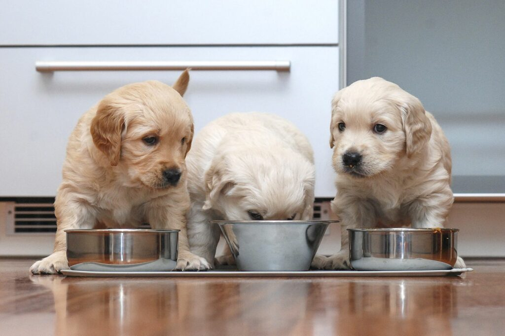

¿Qué cantidad de comida debe comer un perro? :
- Guía fácil
Síguenos en nuestras redes.

¿Cuánta comida necesita un perro?
En este tema no se puede generalizar, ya que la demanda nutricional de cada perro depende de varios factores. Si quieres saber exactamente qué cantidad de comida debe comer un perro, ten en cuenta estos parámetros:- La edad.
- El peso.
- La raza.
- ¿Es un perro muy activo o una perra embarazada?
¿Cuánta comida necesita un cachorro?
Los cachorros crecen rápido los primeros meses. Durante este periodo, sus órganos necesitan una cantidad de nutrientes que al principio obtienen de la leche materna y, a partir del tercer mes, de la comida sólida.La fórmula para cachorros de razas pequeñas es: 0,66 MJ x kg0,75 de peso corporal.
En cambio, los perros de razas grandes necesitan: 0,75 MJ x kg0,75 de peso corporal.

Snacks para perritos.
A la mayoría de los perritos les encantan las croquetas. Puedes darselas en su paila o darselas como premio por buena actitud. Así el pequeño puede adquirir el alimento como un lujo, para que puedas adiestrarlo.Véase también:
- ¿Qué comen los canarios?
- Cómo determinar el sexo en loros.
- Aves domésticas: ¿en pareja o en solitario?